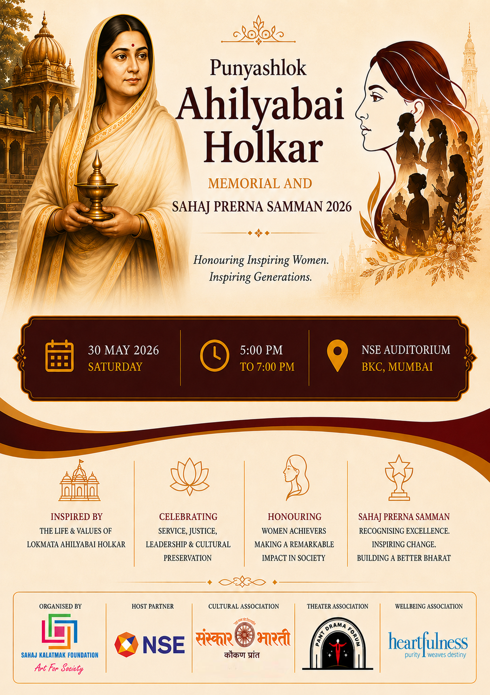

Sahaj Prerna Samman 2026
An evening of inspiration, legacy and recognition dedicated to the timeless values of Lokmata Ahilyabai Holkar.

A celebration of service, leadership and meaningful contribution
Sahaj Prerna Samman 2026 is a meaningful initiative by Sahaj Kalatmak Foundation to recognise women whose work continues to inspire society.
Sahaj Kalatmak Foundation is a cultural and social organization committed to meaningful and inspiring work in the fields of art, literature, theatre, women empowerment and public awareness.
Through Sahaj Prerna Samman, the Foundation seeks to acknowledge value-driven journeys that reflect compassion, dignity, leadership, creativity and social responsibility.
The event is dedicated to the inspiring life values of Lokmata Ahilyabai Holkar — service, justice, cultural preservation, inclusive leadership and public welfare.
Her timeless legacy continues to guide and inspire individuals and institutions working towards a more compassionate and value-based society.
Distinguished presence for an inspiring evening
The ceremony will be graced by respected personalities from cinema, culture, leadership and public life.
Smt. Aruna Raje
Veteran Filmmaker
Shri Rajpal Yadav
Renowned Actor
Smt. Seema Saroj
Chairperson, FICCI FLO Mumbai
Prof. Deepa Singh
Department of Communication & Journalism, University of Mumbai
Shri Raj Shekhar Joshi
Former Vice Chairman, Setu Aayog ( State Planning Commission), Uttarakhand
Women whose journeys inspire society
Celebrating remarkable women whose work reflects courage, compassion, leadership and social transformation.
Mrs. Swati Chauhan
Judiciary & Social Service
Dr. Sujata Bapat
Healthcare, Women Empowerment & Community Wellness
Dr. Nivedita Shreyansh
Spiritual & Youth Value Leadership
Mrs. Varsha Karle
Arts & Cultural Curation
Ms. Alina Alam
Social Inclusion & Human Dignity
Programme highlights
A graceful evening planned with cultural invocation, discussion, recognition and inspiration.
Opening & Cultural Invocation
Shiv Stuti, welcome address, ceremonial lamp lighting and introduction to Sahaj Kalatmak Foundation and Sahaj Prerna Samman.
Expert Discussion Session
A moderated discussion with invited speakers on values, leadership, communication, culture and social contribution.
Sahaj Prerna Samman 2026
Presentation of awards to honourees across judiciary, healthcare, spiritual leadership, arts and social inclusion.
Words of Inspiration
Addresses by distinguished guests and dignitaries, followed by a cultural presentation.
Vote of Thanks & Vande Mataram
Formal closing with gratitude and national spirit.
Important notes for attendees
- Entry is free, with limited seating available.
- RSVP confirmation is requested for event coordination.
- Entry is subject to venue security protocols.
- Please carry any one valid Government-issued photo ID for venue entry.
- Guests are requested to plan their travel in advance, as parking in the BKC area may be subject to availability.
- For event-related queries, please contact Divya Prakash, Program Manager: +91 97304 15945.
Reserve Your Presence
Be a part of an evening of inspiration, legacy and recognition. Kindly confirm your presence for event coordination.
RSVP – Confirm Your Presence